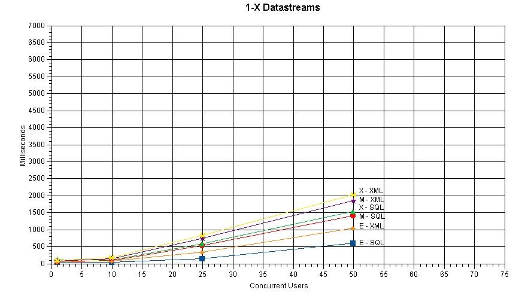
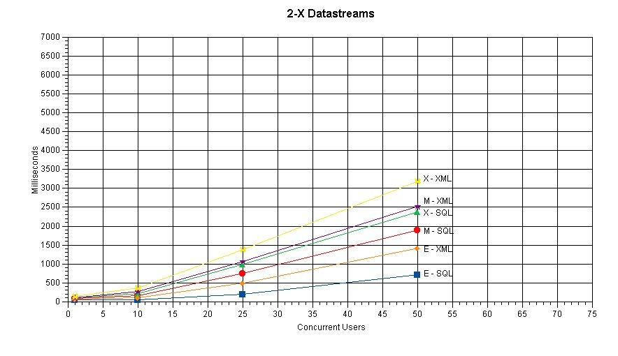

Introduction
A variety of concerns led the core Fedora developers to consider removing the SQL dissemination index from Fedora. These include: eliminating possibly unneeded complexity and accompanying software maintenance; support for multiple DBMS implementations; expected scaling issues with the index with growth in the number of objects in a repository.In October, 2004, we acquired a new test host and ran a series of performance tests to compare dissemination times with and without the SQL dissemination index. (With the index, reading and parsing an object as XML is not required for a dissemination; without the index, reading and parsing an object as XML is required.) The SQL dissemination index is included by driving the test with a URL excluding a version date; in this case, current Fedora software 1.0-2.0 will utilize the SQL dissemination index. The SQL dissemination index is excluded with a URL including a version date.
Test objects of varying size were modeled by objects with 1, 2, or 4 datastreams. Each of these object sizes were also instanced as E, M, or X type objects. JMeter was used to drive a Fedora 1.x repository, at four levels of simulated user load: with 1, 10, 25, and 50 users. Each of these 36 combinations were run for 5 minutes, with a 300-millisecond imposed lag in a thread (i.e., per simulated user) after results received and before the next request was sent. Each combination was run independently and alone, with no other significant load on the server. After each combination's run, a 5-minute wait was imposed to allow the server to achieve a "quiet" state before the next test.
The included graphs compare these tests. Even in the extreme case of "large" (4-datastream) objects driven by 50 users, the penalty for not using the SQL disseminator index is only roughly 50-100% (i.e., the average response times are at most doubled). Though no decision has been made to remove the index (or make it optional in Fedora configuration), we feel that the penalty is not so harsh as to prevent eliminating it. Also, other optimizations might be implemented to help the situation.
Graphs
